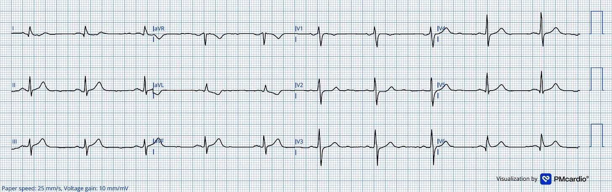
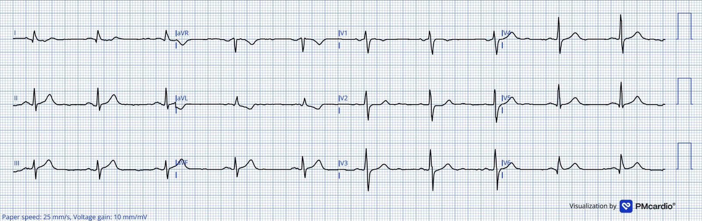
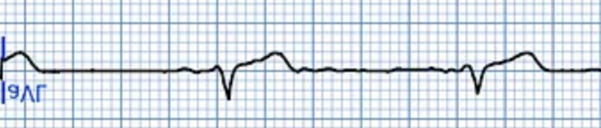
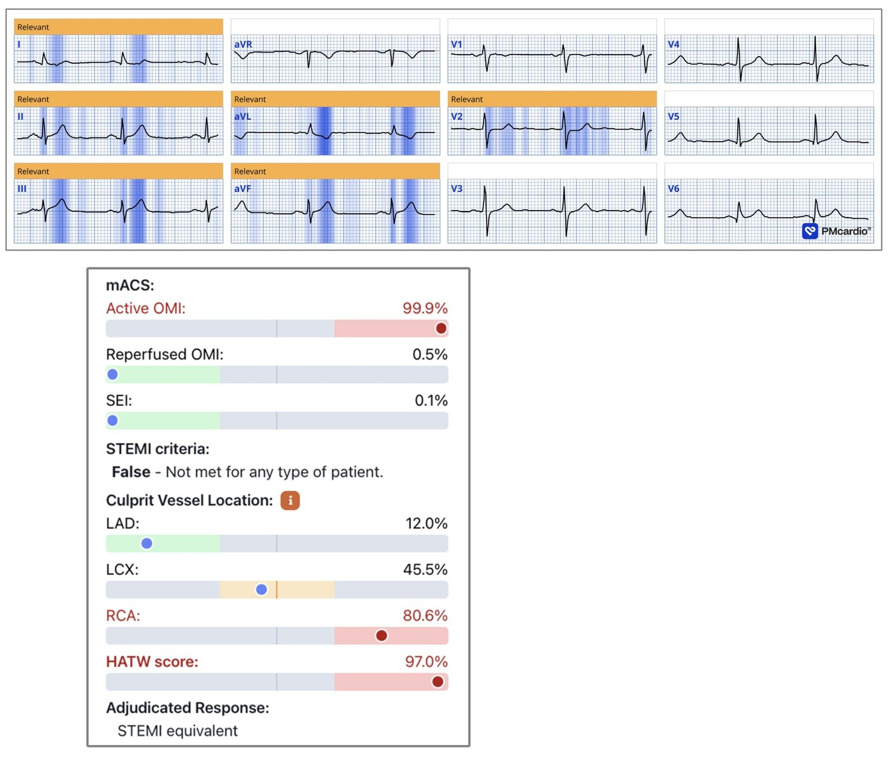
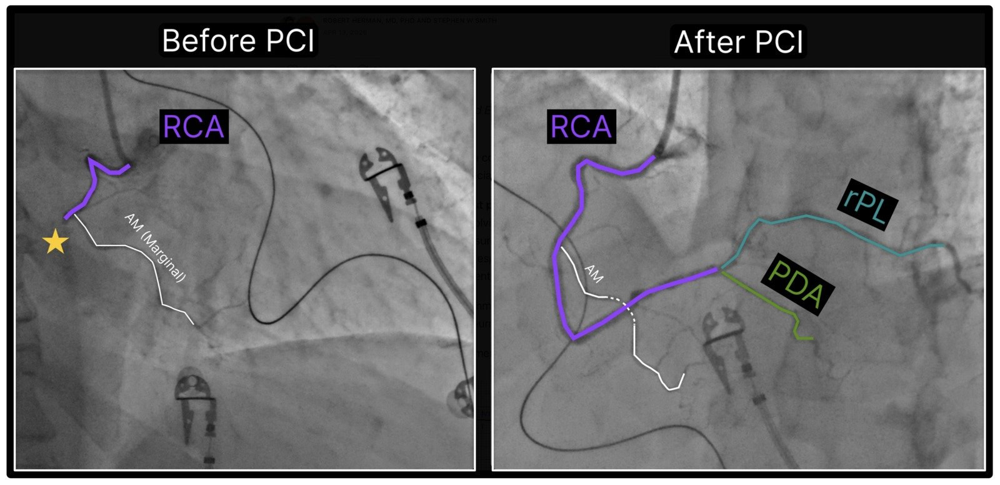
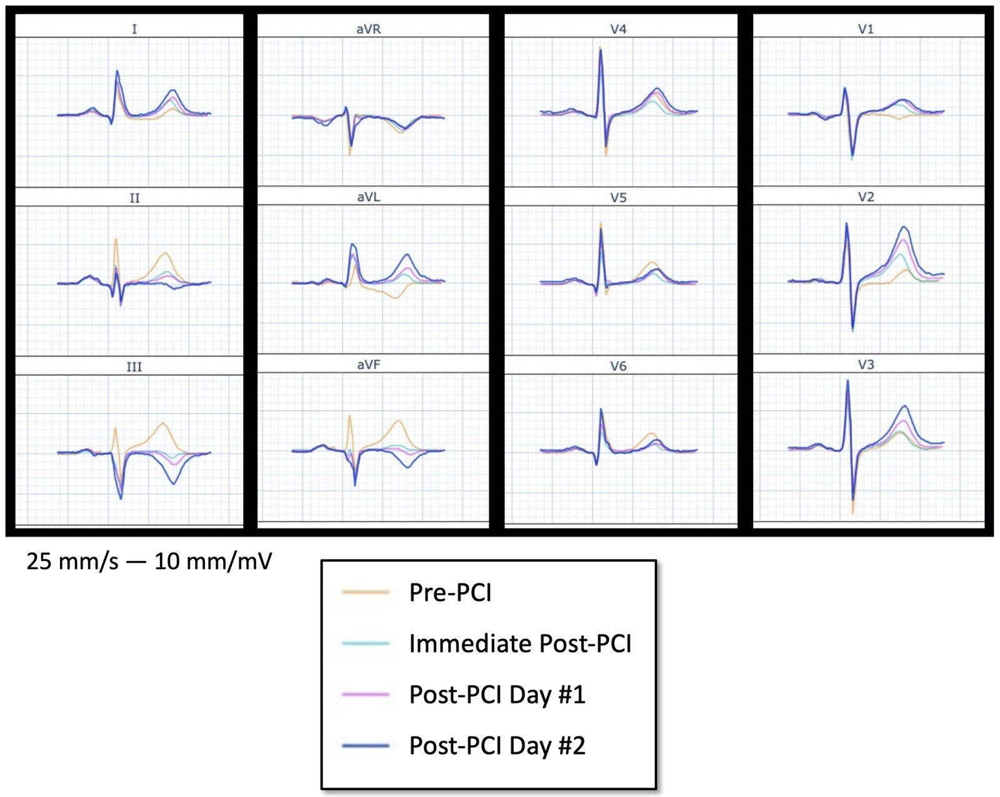
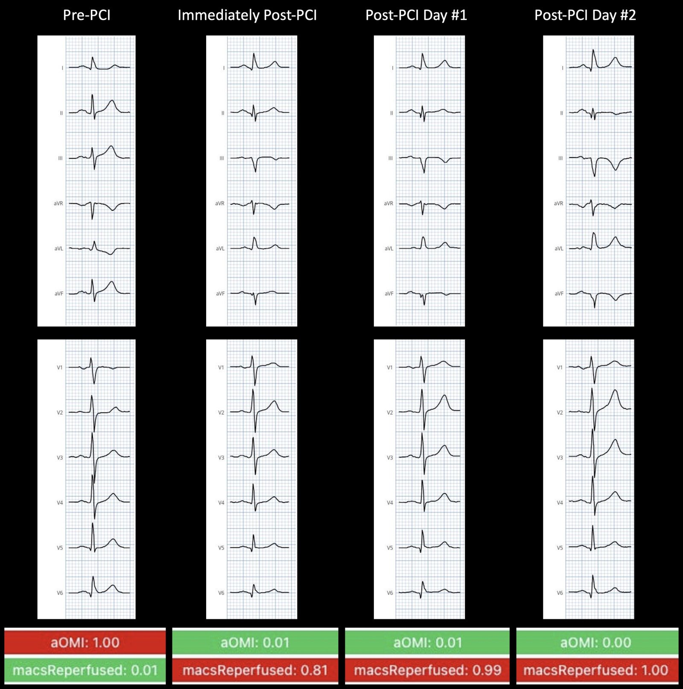
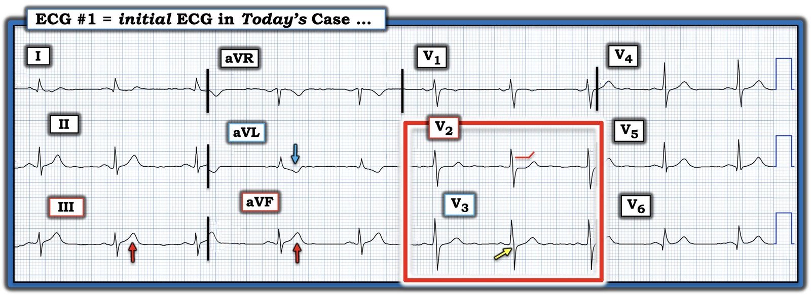

15/04/2026 — Sóng T tối cấp đảo ngược soi gương. Đó là gì?
Bản dịch tiếng Việt của bài "Reciprocally Inverted Hyperacute T-Wave. What is that?" – Dr. Smith’s ECG Blog. Giữ nguyên toàn bộ 7 hình ảnh của bản gốc.


Viết bởi Robert Herman, MD, PhD, biên tập bởi Stephen W Smith (với phần chuyển thể của Ken Grauer từ bài đăng gốc trên ECG Insights).
Lúc 4 giờ sáng. Một người đàn ông ngoài 60 tuổi đến một bệnh viện tuyến cộng đồng — không có phòng thông tim (cath lab) tại chỗ — với bệnh sử đủ khiến bất kỳ bác sĩ lâm sàng nào cũng phải ngồi thẳng dậy.
- Trong hai ngày qua: đau ngực kiểu đè ép, lan lên cổ họng, kéo dài dưới 10 phút rồi tự hết. Ngày hôm sau, không còn triệu chứng.
- Sau đó, về chiều tối Ngày #2: cảm giác đè ép y như vậy, cùng hướng lan, nay đến từng đợt và không đỡ. Không có yếu tố khởi phát, không liên quan hô hấp, không phụ thuộc tư thế một cách nhất quán — dù có vẻ đỡ hơn khi ngồi, nặng hơn khi nằm.
- Không có bệnh lý gì gần đây. Không ghi nhận tiền sử bệnh tim.
Bệnh nhân đến khoa cấp cứu (ED). Trông ổn. Tỉnh táo, không vã mồ hôi lạnh, tưới máu tốt, độ bão hòa oxy 100%, khám phổi không có gì bất thường, tiếng tim mờ nhưng không có âm thổi.
Đây là điện tâm đồ đầu tiên được ghi tại khoa cấp cứu.


— Bạn nghĩ sao? —
= = =
Các bác sĩ cấp cứu tại trung tâm không có PCI đã đọc lại (overread) điện tâm đồ là “không có bất thường tái cực rõ ràng”. Nếu bạn chỉ tìm ST chênh lên hình bia mộ thì kết luận này là dễ hiểu…
Tuy nhiên, các sóng T ở chuyển đạo dưới rất lớn, gần như có cùng kích thước so với phức bộ QRS. Rộng, đầy đặn, đối xứng — đó là cái mà chúng tôi gọi là sóng T tối cấp (hyperacute T-waves). Gần như không có ST chênh lên. Thế nhưng có ST chênh xuống (STD) soi gương rõ ở chuyển đạo I và aVL, kèm sóng T đảo ngược ở aVL, và còn có ST chênh xuống tối đa ở V2–V3, nơi bình thường lẽ ra phải có ST chênh lên nhẹ, do đó có lẽ có > 1 mm ST chênh xuống tương đối (tương đối so với vị trí ST chênh lên bình thường).
Như vậy, còn có cả OMI thành sau.
Smith: Còn có một sóng T tối cấp đảo ngược soi gương ở aVL. Sóng T tối cấp đảo ngược soi gương là gì? Đôi khi sóng T tối cấp rõ nhất lại là sóng soi gương của các sóng T tối cấp THỰC SỰ. Chuyển đạo aVL có một sóng T đảo ngược RẤT lớn, đầy đặn, “phồng căng” xét theo tỷ lệ với sóng R.
Ở đây tôi đã lật ngược hình ảnh chuyển đạo aVL để cho thấy hiện tượng này:


Smith: Trông như một sóng T RẤT tối cấp, thậm chí còn hơn cả các sóng T dương ở chuyển đạo dưới.
Đáng tiếc, các bác sĩ cấp cứu tại trung tâm không có PCI khi đó chưa được dùng mô hình AI đọc điện tâm đồ Queen of Hearts (chính ca này cuối cùng đã đóng vai trò then chốt thuyết phục họ trang bị nó! ). Troponin I độ nhạy cao lần đầu trả về 120 ng/L (giới hạn trên tham chiếu (URL) = 53 ng/L). Lần lặp lại: 108 ng/L.
- Smith: Đừng vì thế mà yên tâm. Troponin đi ngang hoặc giảm nhẹ không loại trừ tắc động mạch vành cấp, đặc biệt trong bối cảnh đau ngực đang thuyên giảm hoặc từng cơn. Kiểu diễn biến này đã được mô tả rõ — và thường xuyên bị hiểu sai. Không bao giờ nên dựa vào việc troponin tăng hay giảm để quyết định can thiệp cấp cứu; troponin là chiếc gương chiếu hậu phản ánh những gì đã xảy ra. Có 2 dữ kiện cho bạn biết điều gì đang xảy ra ngay lúc này: 1) điện tâm đồ (có thiếu máu cục bộ đang diễn ra hay không), và 2) sự hiện diện của triệu chứng đang diễn ra.
- Trường hợp không phải OMI (non-OMI) thường có troponin tăng do thiếu máu cục bộ đã xảy ra vài giờ trước. Ngược lại, tắc mạch có thể xảy ra ngay giây phút này trong khi troponin đang giảm do một khoảng ngắn không còn thiếu máu cục bộ cách đây vài giờ.
Nhóm điều trị diễn giải các mức troponin này là “không tăng đáng kể”, và không kích hoạt quy trình STEMI. Thay vào đó, họ cho pantoprazole 80 mg tĩnh mạch + aspirin 1 g tĩnh mạch — và chọn theo dõi.
= = =
Vài giờ sau, bác sĩ tim mạch trực tại trung tâm PCI tiên phát được liên hệ để hội chẩn cấp cứu NSTEMI. Họ được tiếp cận QOH (Queen-Of-Hearts) theo hình thức tiến cứu — và đây là kết quả đọc điện tâm đồ bằng AI (bạn có thể thấy Queen đã tô đậm NHẤT sóng T tối cấp đảo ngược soi gương ở aVL):


= = =
LƯU Ý: Kết quả đọc QOH này có một tính năng thử nghiệm mới mà chúng tôi đang phát triển — và cho thấy xác suất 99,9% là OMI đang diễn ra (active). Nó cũng báo điểm HATW là 97% và xác suất 80,6% tổn thương thủ phạm nằm ở RCA. (SEI trong hình này là viết tắt của “thiếu máu cục bộ dưới nội tâm mạc” (subendocardial ischemia) — mô hình cũng đánh giá yếu tố này — Ở đây Queen không thấy có).
- Mô hình AI xuất ra các giá trị từ 0 đến 1, với ngưỡng dương tính là 0,5. Giá trị gần 1 có thể hiểu là dương tính với độ tin cậy cao. Giá trị 99,9% là mức đầu ra cao nhất có thể, tương ứng với khả năng dương tính giả cực thấp. Trong các nhóm bệnh nhân cấp cứu không chọn lọc (all-comer), dương tính giả ở mức này rất hiếm, khoảng 1 trên 100.000.
- Về điểm HATW: Trong bài báo chúng tôi công bố vào mùa hè năm 2025, chúng tôi xây dựng và thẩm định định nghĩa định lượng đầu tiên về sóng T tối cấp (HATW): Hyperacute T Waves Are Specific for Occlusion Myocardial Infarction, Even Without Diagnostic ST-Segment Elevation
= = =
Trên bàn thông tim:
- Thời điểm tái thông mạch = 10 giờ sáng ( = 5 giờ sau! ).
- Chụp động mạch vành: hệ ưu thế phải. Đoạn giữa RCA: tắc 100% (đoạn SYNTAX 2).
= = =
Đây là nhồi máu cơ tim cấp thành dưới-sau do tắc hoàn toàn đoạn giữa động mạch vành phải.
Bệnh nhân bị rung thất trên bàn thông tim. Sốc điện chuyển nhịp thành công. Huyết động ổn định trở lại.
- Kết quả chụp mạch sau PCI: Rất tốt!
Xem bên dưới hình chụp động mạch vành có chú thích trước và sau PCI, dùng hệ màu do Dr. Willy Frick (đáng tiếc giờ đã thành fellow điện sinh lý (EP)) đặt ra. Nếu bạn mới làm quen với chụp động mạch vành, tôi rất khuyên bạn đọc hướng dẫn nhập môn của anh ấy. (Đường LINK DỄ TÌM này chỉ cho bạn cách tìm LINK tới Cath Guide tuyệt vời của Dr. Frick ở đầu mỗi trang của Dr. Smith’s Blog!).


Troponin lần thứ ba (lúc này đo bằng hs-cTnT với giới hạn trên tham chiếu 14 ng/L) — vượt quá 1.800 ng/L. Đáng tiếc, việc đo liên tiếp không được tiếp tục cho đến đỉnh, nên mức độ tổn thương cơ tim đầy đủ vẫn chưa rõ.
= = =
Sóng T đảo ngược do tái tưới máu: Không chỉ là hiện tượng ở thành trước
Đa số bác sĩ lâm sàng học về “hội chứng Wellens” như là sóng T đảo ngược sâu, đối xứng ở V2–V4 sau cơn đau ngực — một hình ảnh kinh điển gắn với LAD và vùng thành trước, báo hiệu một tổn thương đoạn gần nguy kịch.
Tôi không đồng tình với cách đóng khung này ở hai điểm. Thứ nhất, các bác sĩ chủ yếu gắn nó với LAD — trong khi cùng một cơ chế sinh lý diễn ra ở mọi vùng chi phối (như bạn sẽ thấy dưới đây). Thứ hai, “Wellens típ A” và “Wellens típ B” không phải hai thực thể riêng biệt, mà là 2 giai đoạn của cùng một quá trình sinh lý bệnh: sóng T hai pha xuất hiện sớm hơn; sóng T đảo ngược sâu, đối xứng xuất hiện muộn hơn. Gọi chúng là các hội chứng riêng biệt làm che mờ điều thực sự đang xảy ra.
Smith: Việc “Wellens” thể hiện sự tái tưới máu động mạch vành (hay tái thông tự phát) trên điện tâm đồ chỉ hiển nhiên với những người theo dõi thường xuyên blog của tôi. Điều này chưa bao giờ được mô tả chính thức như vậy trong y văn.
Điều thực sự đang xảy ra: sau khi động mạch thủ phạm được tái tưới máu — dù là LAD, RCA hay LCx — các sóng T ở vùng chi phối tương ứng dẹt đi rồi đảo ngược khi cơ tim bị choáng (stunned myocardium) hồi phục. Đây là một quá trình động, phụ thuộc thời gian. Tên gọi đúng cho nó đơn giản là sóng T đảo ngược do tái tưới máu (reperfusion T-wave inversion), khu trú ở vùng chi phối của động mạch được mở lại.
Trong ca hôm nay, hãy tập trung vào các chuyển đạo dưới ở các bản ghi bên dưới. Các sóng T tối cấp, rộng trước đó ở chuyển đạo II, III và aVF — dấu ấn của RCA bị tắc — dẹt dần rồi đảo ngược sau PCI thành công, VÀ sóng T tối cấp đảo ngược trước đó ở aVL trở nên dương. Đây chính là hình ảnh bạn sẽ thấy ở V2–V4 sau tái tưới máu LAD (Wellens). Vùng chi phối khác, sinh lý giống hệt.


Hình trên cho thấy nhát bóp trung vị (median beat) của các điện tâm đồ trước PCI (vàng) — ngay sau PCI (lục lam) — Ngày #1 sau PCI (hồng) — và Ngày #2 sau PCI (xanh dương), tất cả được chồng lên nhau.
= = =
Vì sao nhận ra hình ảnh này lại quan trọng? Dù sóng T đảo ngược sau PCI là dấu hiệu được dự kiến, cùng hình ảnh đó cũng xuất hiện khi bệnh nhân đến khoa cấp cứu với điện tâm đồ đã cho thấy tái tưới máu — nghĩa là động mạch đã tự mở ra trước khi bệnh nhân đến viện. Queen of Hearts hiện xếp các ca này vào “NSTEMI nguy cơ cao”, ghi nhận rằng động mạch thủ phạm đang mở tại thời điểm ghi bản ghi nhưng tổn thương nền vẫn không ổn định và nguy hiểm (và có thể tắc lại bất cứ lúc nào, vì chưa có can thiệp cơ học nào).


Hình trên cho thấy điểm số cho aOMI ( = OMI đang diễn ra) — và cho mACS Reperfused (= OMI đã tái tưới máu). Lưu ý: Không thể phân biệt tái tưới máu tự phát với tái tưới máu cơ học bằng điện tâm đồ.
= = =
Điểm MẤU CHỐT: Một phân biệt quan trọng đáng để bàn kỹ — và là điều tôi thấy bị gộp làm một quá thường xuyên, kể cả ở những bác sĩ đã chấp nhận mô hình OMI: cách đóng khung nhị phân “tắc vs không tắc” bỏ sót một trạng thái thứ ba làm thay đổi hoàn toàn cách xử trí. Thực ra có 3 tình huống lâm sàng khác biệt:
- OMI đang diễn ra: Động mạch đang bị tắc ngay lúc này. Điện tâm đồ cho thấy ST chênh lên hoặc, trong 50% trường hợp, các tương đương STEMI (như sóng T tối cấp, ST chênh lên tối thiểu, hoặc các thay đổi thiếu máu cục bộ đang diễn ra khác). Bệnh nhân này cần vào phòng thông tim ngay lập tức.
- OMI đã tái tưới máu: Động mạch đã bị tắc nhưng đã tự tái thông trước khi ghi điện tâm đồ. Điện tâm đồ lúc này cho thấy hình ảnh tái tưới máu: sóng T đảo ngược ở vùng thủ phạm, thường kèm bệnh sử đau ngực đã giảm một phần hoặc hết hoàn toàn. Lưu ý: tái thông tự phát (nếu động mạch tự mở ra) — không thể phân biệt với tái tưới máu cơ học (nếu động mạch được mở bằng PCI trong phòng thông tim).
- Không OMI (bao gồm NOMI và không có nhồi máu): Động mạch chưa bao giờ bị tắc, hoặc không xảy ra nhồi máu cơ tim. Nhóm này bao gồm nhồi máu cơ tim típ 2 (như thiếu máu cục bộ do tăng nhu cầu từ một nguyên nhân khác) — cũng như nhồi máu cơ tim típ 1 do nứt vỡ mảng xơ vữa không gây tắc (những bệnh nhân “may mắn” không bao giờ bị tắc hoàn toàn). Nhóm này cũng bao gồm nhóm lớn nhất, vượt xa các nhóm khác, trong số bệnh nhân đau ngực: những người hoàn toàn không có nhồi máu cơ tim hay tăng troponin.
= = =
Những điểm cần học chính:
- Sóng T tối cấp là dấu hiệu sớm nhất — và hay bị bỏ sót nhất — của OMI. Độ đặc hiệu rất cao. Không cần ST chênh lên. Hãy nhìn tỷ lệ T/QRS, độ rộng và tính đối xứng. Thay đổi soi gương sẽ chốt chẩn đoán. Đọc thêm về bài báo công thức HATW của chúng tôi trên JACC: Advances.
- Hai lần troponin “đi ngang nhưng tăng” không loại trừ tắc mạch đang diễn ra. Đau ngực giảm dần kèm troponin ở dạng bình nguyên là bệnh cảnh kinh điển của OMI ngắt quãng (stuttering) hoặc tái tưới máu tự phát — không phải lý do để yên tâm.
- Sóng T đảo ngược do tái tưới máu xảy ra ở mọi vùng chi phối, không chỉ thành trước.
- Thời gian thiếu máu cục bộ kéo dài làm chết cơ tim và tạo ra nguy cơ khi làm thủ thuật. Bệnh nhân này đã ngừng tim trên bàn can thiệp. Mỗi giờ trì hoãn vừa là cơ tim mất đi, vừa là nguy cơ loạn nhịp tăng thêm.
- Đọc bằng AI ngay tại điểm tiếp xúc đầu tiên có thể thay đổi kết cục. Queen of Hearts đọc điện tâm đồ này là 99,9% OMI đang diễn ra. Thông tin đó đã không có ở cơ sở chuyển viện vào lúc nó quan trọng nhất.
= = =
======================================
BÌNH LUẬN CỦA TÔI, bởi KEN GRAUER, MD (15/4/2026):
Ca hôm nay của các BS. Herman và Smith làm nổi bật một loạt điểm thiết yếu về việc đánh giá và nhận diện các giai đoạn nối tiếp của một OMI cấp ở một bệnh nhân không may đã không được can thiệp kịp thời.
- Tôi tập trung Bình luận của tôi vào một số suy nghĩ bổ sung về điện tâm đồ đầu tiên — mà tôi đã tái hiện và đánh dấu trong Hình 1.
= = =
Điều đập vào “mắt” tôi …
Khi biết bệnh nhân hôm nay đến viện với bệnh sử CP (đau ngực – Chest Pain) đáng lo ngại — tôi chỉ mất chưa đến 5 giây để nhận ra cần thông tim sớm!
- “Mắt” tôi lập tức bị thu hút bởi sóng ST-T ở chuyển đạo V2 (trong hình chữ nhật MÀU ĐỎ). Trong bản ghi này với nhịp xoang, các khoảng bình thường (PR,QRS,QTc) và không có lớn buồng tim — dấu hiệu ở chuyển đạo V2 là đoạn ST dẹt “dạng bậc thềm” (shelf-like) kèm ST chênh xuống nhẹ, ở bệnh nhân có CP đáng lo ngại, là chẩn đoán OMI thành sau cấp cho đến khi chứng minh được điều ngược lại!
- Như chúng tôi vẫn thường nhấn mạnh trong Dr. Smith’s ECG Blog — chuyển đạo V2,V3 bình thường phải có một chút ST chênh lên dốc lên thoai thoải. Do đó — ngay cả mức ST chênh xuống rất nhẹ mà ta thấy ở chuyển đạo V2 trong Hình 1 cũng có ý nghĩa!
- Làm cho dấu hiệu ở chuyển đạo V2 càng chắc chắn hơn — là sự mất đi mức ST chênh lên dốc lên nhẹ bình thường ở chuyển đạo kế bên V3 (mũi tên MÀU VÀNG mà ta thấy trong Hình 1 cạnh điểm J ở chuyển đạo V3).
= = =
Các dấu hiệu ở Chuyển đạo Chi …
Như các BS. Herman và Smith đã nêu bật — các dấu hiệu ở chuyển đạo chi cũng có giá trị chẩn đoán ngang bằng.
- Sóng ST-T ở chuyển đạo III và aVF rõ ràng không tương xứng về kích thước so với biên độ khiêm tốn của QRS ở các chuyển đạo này — điều mà ở bệnh nhân có CP mới xuất hiện gợi ý tính tối cấp (tức là, các sóng ST-T ở chuyển đạo dưới này “béo” hơn ở đỉnh và rộng hơn ở đáy so với mức lẽ ra phải có, xét theo kích thước tương đối nhỏ của QRS). Theo đó — chuyển đạo dưới thứ 3 (= chuyển đạo II ) gần như chắc chắn cũng tối cấp.
- ĐIỂM THEN CHỐT (PEARL) của Dr. Smith: Mọi băn khoăn mà tôi có thể có về tính tối cấp của các chuyển đạo dưới trong Hình 1 — đã lập tức được giải tỏa ngay khi tôi thấy sóng ST-T tối cấp soi gương ở chuyển đạo aVL! (mũi tên MÀU XANH ở chuyển đạo này).
= = =
ĐIỀU CỐT LÕI: Ở bệnh nhân có CP đáng lo ngại này — điện tâm đồ đầu tiên của ca hôm nay có giá trị chẩn đoán OMI dưới-sau-bên cấp (Như một “T.B. (P.S.)” — sóng Q lớn hơn mức lẽ ra phải có và ST chênh lên đi kèm mà ta thấy ở chuyển đạo V6 — gợi ý có tổn thương thành bên).
- Do đó — nhu cầu thông tim lẽ ra đã có thể được xác định từ lâu trước mốc 5 giờ mà thực tế đã mất.
- Việc troponin ban đầu tăng càng khẳng định thêm sự cần thiết phải thông tim sớm — NHƯNG — kết quả troponin tim là không cần thiết trong quá trình ra quyết định.
= = =
Hình 1: Tôi đã đánh dấu điện tâm đồ đầu tiên trong ca hôm nay.


= = =
= = =
= =
= = =